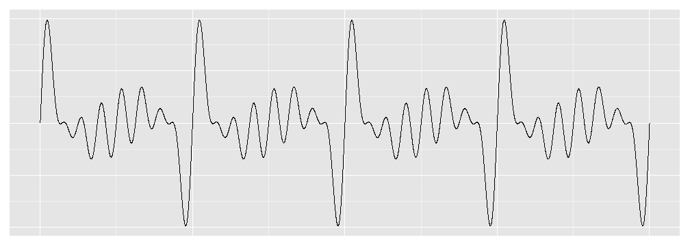

- Can we visually identify consonant/dissonant chords?
- What factors contribute to consonance/dissonance?
- Build general intuition about chord qualities.
- See chords
Tyler Plass
Music Theory
-See chord qualities in yet another context.
-Visualize effect of chord inversions on consonance.
Physics
-Examples of familiar sounds as waveforms.
-Help convert musicians to physicists.
Math
-Visual confirmation of periodicity of added sine waves.
-Help convert musicians to mathematicians.
Chords are defined by the ratio of the frequencies of constituent notes to the root note. We used a sine wave with frequency 1 as our "root note". Then make more sine waves with frequencies at multiples of 1 corresponding to the chord type chosen. These new waves are added to the "root note" to create the chord's wave form.
This is a snippet of code modified to assume "majpower" and 8 root note cyles have been selected.
chordtype = "majpower"
root.cycles = 8
if (chordtype == "majpower") {
fund.mult = c(1, 3/2, 2, 10/4, 6/2, 4)
}
## make our x/time variable also initialize our dummy note and chord
x <- seq(0, root.cycles, by = 0.001)
newnote <- x
chord <- rep(0, length(x))
## building the chord wave
for (i in 1:length(fund.mult)) {
newnote <- sin(2 * pi * fund.mult[i] * x)
chord <- chord + newnote
}
So let's see that power chord!

Looking at fund.mult, we see the the least common denominator for our frequency ratios is 2. In our graph, we see 4 powerchord cycles for 8 root note cycles. So we can see that the LCD of our frequency ratios is the number of root note cycles to get a full chord cycle.
I got these frequency ratios from Michigan Technological University's Physics of Music webpage about chords.
To learn more about the Physics of Music, feel free to browse the index page.
Thank you B. H. Suits for making these notes available!